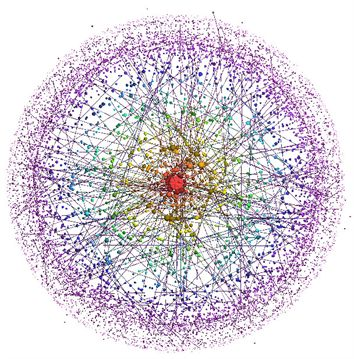
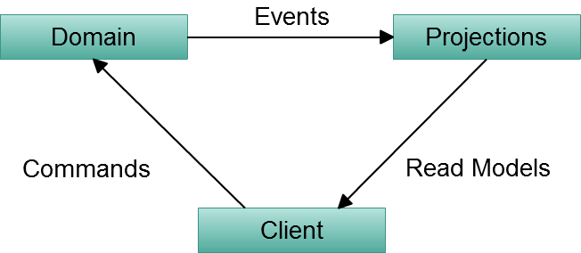
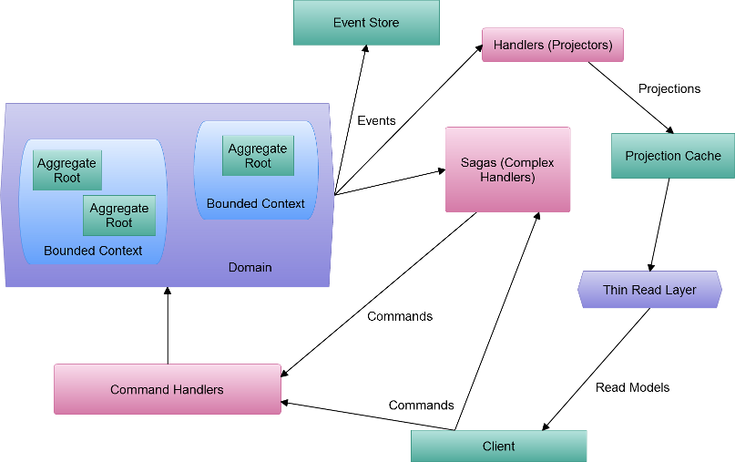

Your browser doesn't support the features required by impress.js, so you are presented with a simplified version of this presentation.
For the best experience please use the latest Chrome or Safari browser. Firefox 10 (to be released soon) will also handle it.
Взгляд на CQRS и Event Sourcing
Константин Титаренко
О чем поговорим?
- когда использовать Command/Query Responsibility Segregation, Event Sourcing (CQRS/ES)
- сравнение CQRS/ES с многослойной (N-Tier) архитектурой
- независимость от инфраструктуры
- тестируемость и надежность
- практика (код-код-код, с комментариями и демонстрацией)
Отвлечемся
и рассмотрим проблемы, с которыми сталкивался каждый разработчик
Сложность
и высокая связанность элементов модели

Зависимость
от инфраструктуры
Низкая
производительность
Нежелание
и сложность написания тестов
Дефекты
- баги и проблемы с релизами
Решение?
Серебрянная пуля!
дисклеймер - вероятно шутка, а возможно - нет
Event Stream
CQRS/ES
очень абстрактно, без деталей

CQRS/ES

N-Tier
CRUD
Демонстрация
исходный код доступен на Github
Резюме
- масштабируемость "из коробки"
- сконцентрированность на намерениях и поведении
- достаточно простая реализация инфраструктуры
- тестируемость, доступность результатов клиенту
- аудит "из коробки"
- гибкость и высокая скорость построения отчетов
- "машина времени" "из коробки" - возможность продвинутого анализа
Спасибо за внимание!
большинство используемых картинок найдены с помощью Google и
используются здесь в некоммерческих целях, права на них принадлежат соответствующим правообладателям